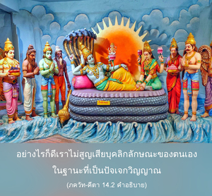
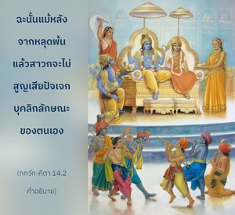

เมื่อมาตั้งมั่นในความรู้นี้เขาสามารถบรรลุถึงธรรมชาติทิพย์เหมือนกับตัวข้า เมื่อสถิตเช่นนี้เขาจะไม่เกิดเมื่อถึงเวลาสร้าง และจะไม่วุ่นวายใจเมื่อถึงเวลาทำลาย




หลังจากได้ความรู้ทิพย์อันสมบูรณ์ เราจะได้รับคุณลักษณะเดียวกันกับองค์ภควานฺ และมาเป็นผู้ที่มีอิสระจากการเกิด และการตายซ้ำซาก อย่างไรก็ดี เราไม่สูญเสียบุคลิกลักษณะของตนเองในฐานะที่เป็นปัจเจกวิญญาณ เป็นที่เข้าใจได้จากวรรณกรรมพระเวทว่า ดวงวิญญาณผู้หลุดพ้นที่มาถึงดาวเคราะห์ทิพย์ในท้องฟ้าทิพย์ หมายจะมาพึ่งพระบาทรูปดอกบัวขององค์ภควานฺ และปฏิบัติรับใช้พระองค์ด้วยความรักทิพย์เสมอ ฉะนั้น แม้หลังจากหลุดพ้นแล้วสาวกจะไม่สูญเสียปัจเจกบุคลิกลักษณะของตนเอง
โดยทั่วไปในโลกวัตถุความรู้ใดๆ ที่เราได้รับนั้นจะแปดเปื้อนไปด้วยมลทินจากสามระดับแห่งธรรมชาติวัตถุ ความรู้ที่ไม่เปื้อนมลทินจากสามระดับแห่งธรรมชาติ เรียกว่า ความรู้ทิพย์ ทันทีที่สถิตในความรู้ทิพย์ เราได้อยู่ในระดับเดียวกันกับองค์ภควานฺ พวกที่ไม่มีความรู้แห่งท้องฟ้าทิพย์ เชื่อว่าหลังจากได้รับอิสรภาพจากกิจกรรมทางวัตถุในรูปลักษณ์ทางวัตถุ บุคลิกลักษณะทิพย์นี้จะกลายมาเป็นผู้ที่ไร้รูปลักษณ์ ไม่มีความหลากหลาย อย่างไรก็ดี ในโลกทิพย์มีความหลากหลายเหมือนกับโลกวัตถุเช่นเดียวกัน พวกที่อยู่ในอวิชชาเช่นนี้คิดว่าความเป็นอยู่ทิพย์ตรงกันข้ามกับความหลากหลายทางวัตถุ แต่อันที่จริงในท้องฟ้าทิพย์เรามีรูปลักษณ์ทิพย์ มีกิจกรรมทิพย์ และมีสถานภาพทิพย์ซึ่งเรียกว่าชีวิตแห่งการอุทิศตนเสียสละ ในบรรยากาศนั้นกล่าวไว้ว่า ไม่มีมลทินแปดเปื้อน ที่นั้นเราเสมอภาคกับองค์ภควานฺในด้านคุณภาพ เมื่อได้รับความรู้เช่นนี้เราต้องพัฒนาคุณสมบัติทิพย์ทั้งหมด ดังนั้น ผู้ที่พัฒนาคุณสมบัติทิพย์จะไม่ได้รับผลกระทบจากการสร้าง หรือการทำลายของโลกวัตถุ